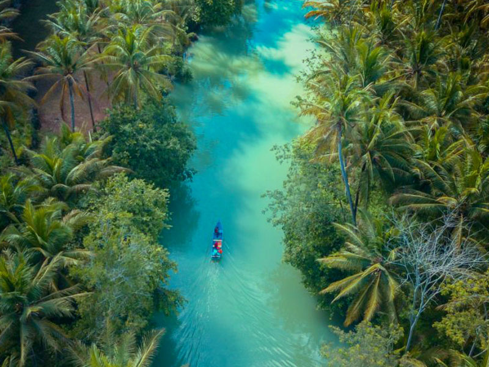
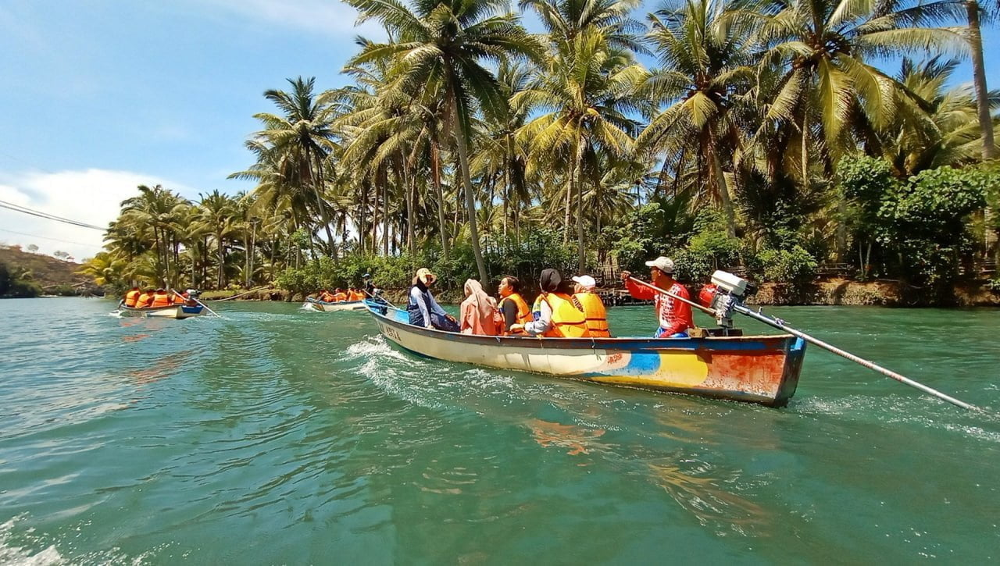

Aktivitas sehari-hari terkadang memang sangat melelahkan dan membuat kita butuh refreshing ya?. Nah buat kamu yang berada di Kabupaten Pacitan bisa nih coba melepas penat dengan berkunjung ke wisata Sungai Maron.
Merupakan tempat recommended untuk kamu melepas penat bersama teman, atau keluarga tercinta di kabupaten Pacitan. Sungai Maron atau dikenal juga Kali Maron ini menghadirkan pesona bak sungai Amazon Amerika loh. Panorama alamnya yang sangat indah ini benar-benar memanjakan semua mata yang berkunjung.
Datang dan explore wisata Sungai Maron ini, buang rasa penat, bosan, dan jenuh yang melanda. Kamu bisa menyusuri aliran kali sejauh 4,5 Km. Sejak dibukanya Objek Wisata Sungai Maron pada tahun 2021, wisata ini masih ramai akan pengunjung dan menjadikannya destinasi wisata andalan. Yakin banget deh semua lelahmu selama beraktivitas akan sirna saat melihat suasana dan panorama Sungai Maron yang damai ini. Bener-bener adem dan relax, gak cuma tubuhnya, tapi jiwa juga akan relax. Selain panoramanya yang indah banget, di sini juga ada spot anti mainstreamnya huhuhu keren banget pokoknya.
Harga tiket masuknya juga ga akan bikin kantongmu kering loh. Dengan semua keindahan yang di tawarkan, kamu cuma perlu bayar Rp. 5.000 saja per orang untuk masuk ke objek wisata ini. Sedangkan tarif parkir kendaraan sebesar Rp. 3.000 untuk motor, dan Rp. 5.000 untuk mobil. dan buat kamu yang mau menyewa perahu berkapasitas 4 orang hanya perlu membayar biaya sewa sebesar Rp. 100.000 aja loh.Sungai Maron Pacitan ini buka setiap hari ya, mulai dari pukul 07.00 WIB sampa pukul 17.00 WIB. Bakal puas deh menikmasti panoramanya yang super duper indah dan spot-spot terbaiknya. Jangan lupa diagendakan dan rasakan sendiri sensasi liburan menyusur sungai maron. Lokasinya ada di Dersono, Pringkuku, Kabupaten Pacitan
Foto lain ditempat ini.
Temukan lokasi tempatnya.
Copyright © MyPacitan. All Right Reserved